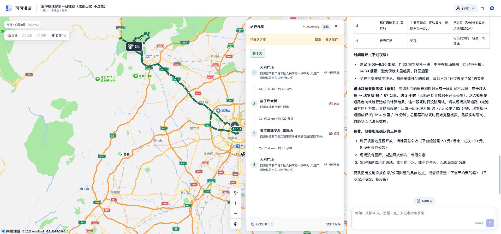

从你的要求，
到文档里的结果。
选择内容，说明目标。Coco 完成修改，原文和结果都清楚可见。
- 01
打开文档
从当前内容开始。
- 02
说出要求
范围和目标，都可以说明。
- 03
查看结果
每一处改动都留在原文中。
Coco Office，在你工作的地方继续。
网页版、Office 插件或桌面应用。选择适合眼前文档的方式。
从现在要做的事开始。
在浏览器里处理文档，或打开 Coco Travel 规划下一段旅程。

选择内容，说明目标。Coco 完成修改，原文和结果都清楚可见。
从当前内容开始。
范围和目标，都可以说明。
每一处改动都留在原文中。
网页版、Office 插件或桌面应用。选择适合眼前文档的方式。
在浏览器里处理文档，或打开 Coco Travel 规划下一段旅程。